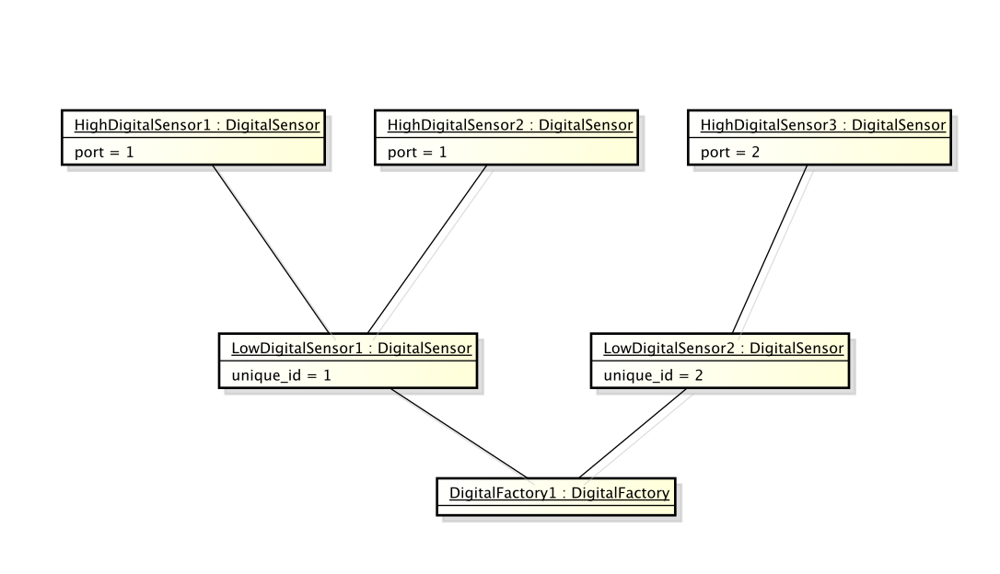

What is LinkJVM
- Java Runtime Enironment(JamVM)
- Java compiler and other tools(javac, jar, ...)
- Library for controlling the robot with Java
You can execute any JVM language(Scala, JavaScript(Rhino), ...) with LinkJVM.
Design Approach - Example

{The End}
Made with <3
Contact: m@mklein.co.at
© 2014, Markus Klein © 2014, LinkJVM